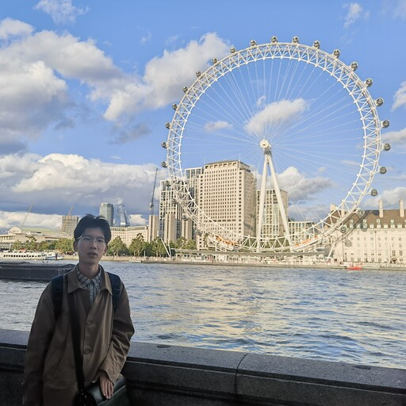

Hi! I'm currently a junior at Zhejiang University majoring Computer Science and Technology. I'm also an honored member of the Chu Kochen Honors College, Mixed Class. 
I have a broad interest in Artificial Intelligence, Machine Learning, and Computer Vision. My current research focuses on Trustworthy AI and ML robustness.
I am seeking a Ph.D. position in ML and CV, starting from Fall 2025. If you are interested in my research or would like to colaborate, please feel free to reach out!
09.2021 - Present: Zhejiang University, major in Computer Science and Technology
07.2022 - 08.2022: Oxford University, course exchange
06.2024 - Present: Michigan State University, research intern
To be continued...
Zeng, Q., Song, J., Zheng, H., Jiang, H., Song, M.
D²-DPM: Dual Denoising for Quantized Diffusion Probabilistic Models. Submitted to AAAI 2025.
To be continued...
- I'm a cinephile since high school. Movies have always been one of the best ways to find my inner peace, especially art house cinema. See more about my taste in movies.
- I'm a regular book reader. I read a lot of books, mostly about philosophy, and literature. Often I'll take time to read when I'm overwhelmed with tasks as a way to maintain my state of focus. Or to escape reality when I'm in a bad mood. My favorite authors are Raymond Carver, Fyodor Dostoyevskiy and Albert Camus. See more about my reading list.
- I have multiple preferences in music. Apart from pop music and hip-hop, I also enjoy post-punk, shoegaze, dream pop and indie rock music. My favorite bands are The Radio Dept., My Bloody Valentine, and The 1975. See more about my music preference.
- Definitely a sports fan, especially keen on soccer and tennis. Always a diehard fan of Barça and Dominic Thiem. I'm a former team leader of the CKC honors college soccer team, and also a member of the college tennis team, having won the 3rd place in Zhejiang University Intramural Tennis Team Competition. See the picture.
{% include footer.html %}